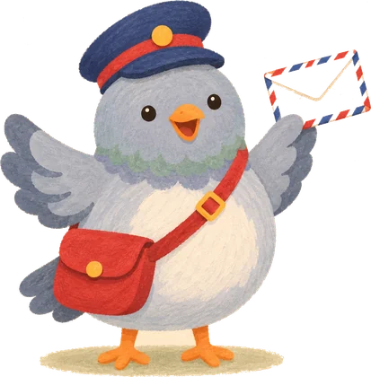
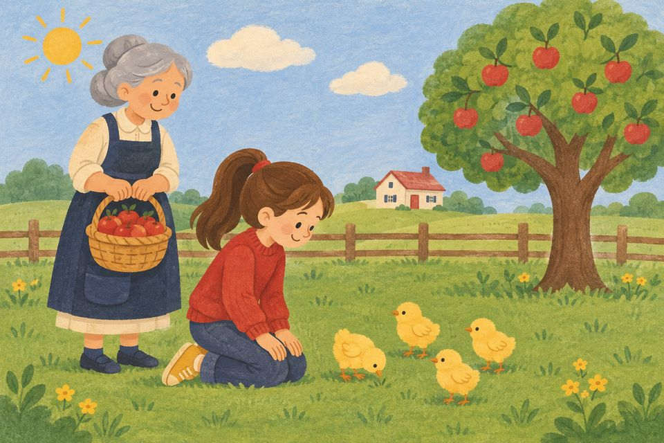
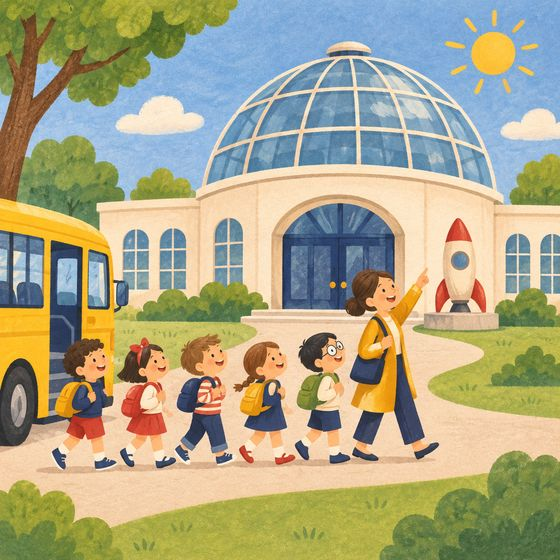
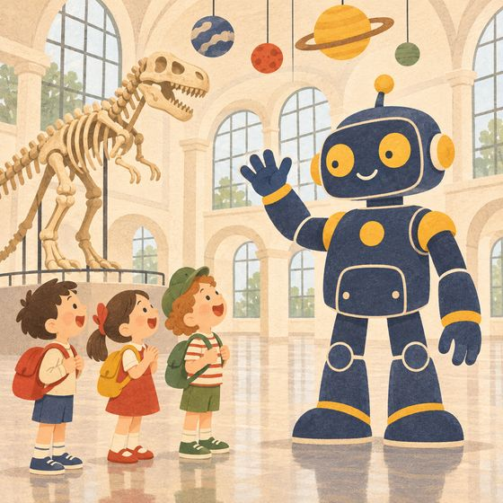
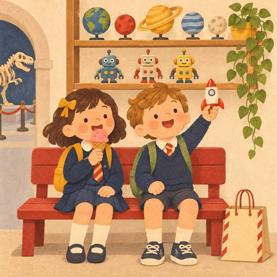

给没去成的朋友，
讲讲昨天的事
A short email about yesterday

嗨，我是 Pip！这一课我带你写一封短邮件。学完你能给朋友写清楚：昨天去了哪儿、看到了什么、做了什么。
- 1 看Pip 教写邮件
- 2 读Lily 的邮件
- 3 仿写照着写句子
- 4 改写平时→昨天
- 5 翻译中文→英文
- 6 写一封短邮件
- 7 批改AI 当场改
- 8 游戏赶邮车
- 9 过关领徽章
每一步系统都会当场告诉你对不对。卡住了，点右上角「问老师」。
第 1 步 · 看：Pip 教你写这封邮件
点一下播放，大约 1 分钟，有英文配音和中英字幕。
这段视频教了三件事
- 一封短邮件有三部分：Say hello → Share your news → Say goodbye，最后写名字。
- 讲你的事，就是回答三个问题：Where did you go? What did you see? What did you do?
- 写昨天的事，动词要变一变：go → went，see → saw，pick → picked，have → had，is → was
第 2 步 · 读：Lily 写给 Ben 的邮件
方案原句：「阅读素材同步仿写」——先读，后面三步都照着这封邮件来。

To: Ben Subject: My weekend
打招呼讲你的事说再见 + 名字
找一找：Lily 讲的都是上周六的事。邮件里有 5 个变成了「过去的样子」的动词（视频里见过），把它们点出来。0 / 5
第 3 步 · 仿写：照 Lily 的句子，写你自己的
方案原句：「阅读素材同步仿写」。每一句都要自己选对动词。
第 4 步 · 改写：把「平时的事」改成「昨天的事」
方案原句：「所有语法知识点全部通过仿写、改写、翻译、写作落地实操掌握」。
第 5 步 · 翻译：用英文说出这三句
方案原句：「句型翻译夯实语法」。这三句等会儿写邮件正好用得上。
第 6 步 · 写：给 Tom 写一封短邮件
方案原句：「文体专项训练」——文体是你 KET 写作里的「短邮件」。
Your class went to the Science Museum yesterday. Your friend Tom was ill and stayed at home.
Write an email to Tom. Tell him:
Write an email to Tom. Tell him:
- where you went
- what you saw
- what you did there



中文意思：昨天全班去了科技馆，Tom 生病没去。写邮件告诉他：去了哪儿、看到了什么、在那儿做了什么。
④ 你的英文名：
To: Tom Subject: The school trip
已写 0 词（要求 25 词以上）
第 7 步 · AI 批改
方案原句：「写作AI智能批改、语法纠错、句型优化」。
样本演示：这里是规则检查 + 预置反馈，正式版接 AI。
还没有交作文。
第 8 步 · 游戏：赶邮车
方案原句：「AI游戏化闯关、积分徽章、趣味交互，解决坚持问题」。玩的就是这一课的句型和动词。